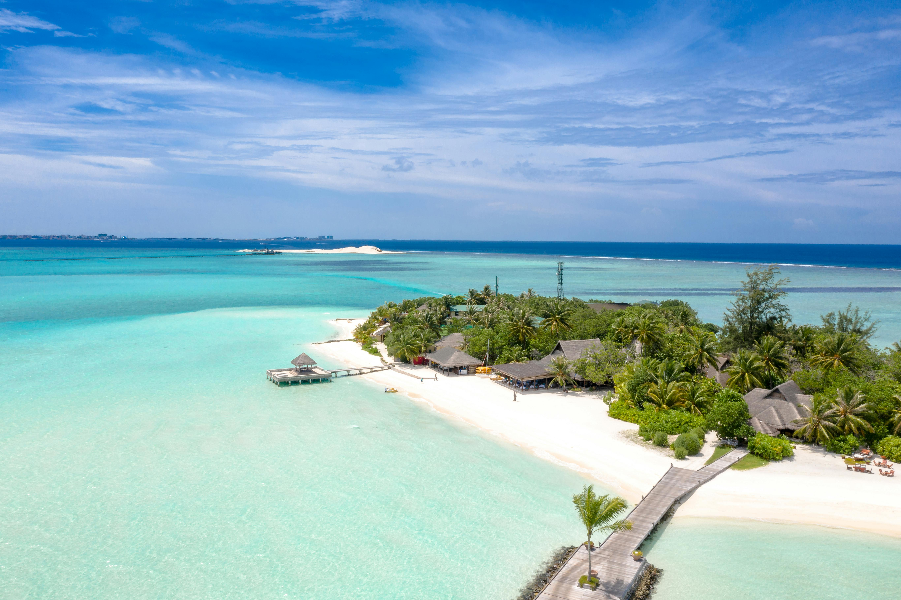

Галерея




Туризм на Мальдівах завжди був унікальним курортом та відзнакою роскоші для людей. Поплавати в кристально чистому океані, відпочити на білосніжних пляжах, насолодитися мальдівською кухнею - унікальна та тропічні Мальдіви дадуть це усе в повній мірі
Чому туристи незважаючі на "давній вік туру" все одно рвуться поїхати до Мальдів?
Мальдіви відомі своїми білосніжними пляжами, кристально чистим океаном та барвистими кораловими рифами. Це ідеальне місце для дайвінгу та снорклінгу, де можна побачити неймовірну кількість морських істот. Крім того, Мальдіви - це єдине місце в світі, де є так звані “морські зірки” - біолюмінесцентні планктони, які світяться вночі, створюючи незабутнє видовище.
Культура Мальдів відображає вплив різних цивілізацій, які прийшли сюди протягом століть. Від індійської, арабської до африканської - всі вони залишили свій слід в музиці, танцях, кухні та мистецтві Мальдів. Одним з найважливіших культурних елементів є музика бодуберу, яка виконується на традиційних барабанах.
Є багато мальдівських легенд і міфів, які передаються з покоління в покоління. Одна з них розповідає про Раннамаарі, морського демона, який щорічно приходив на Мальдіви, щоб вимагати податок. Згідно з легендою, він був подоланий героєм по імені Мухаммаду Таріх, який привів іслам на острови. Ці та інші особливості роблять Мальдіви незабутнім місцем, яке варто відвідати. Кожен острів є унікальним світом, що чекає на своїх дослідників. Зануртеся в цю екзотичну культуру та насолодіться незабутнім відпочинком на Мальдівах!